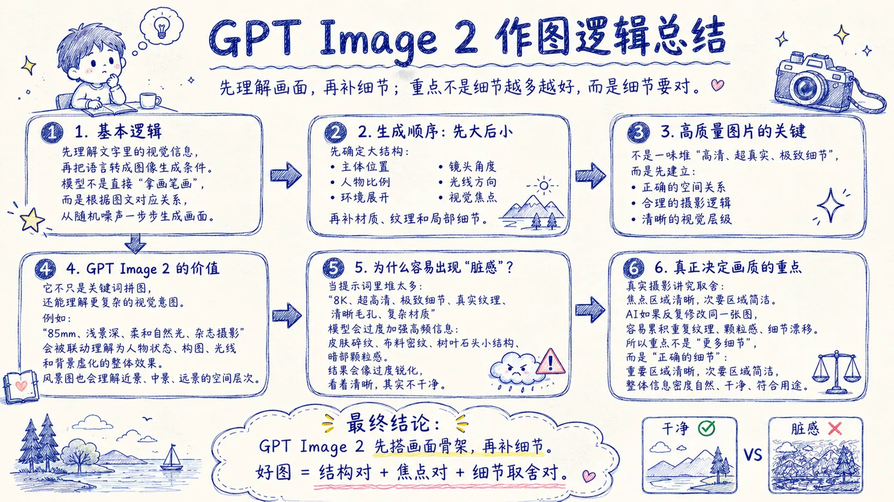
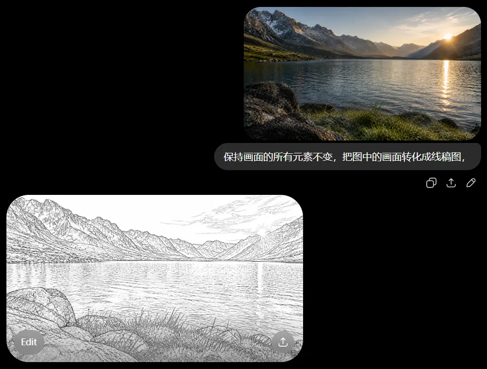
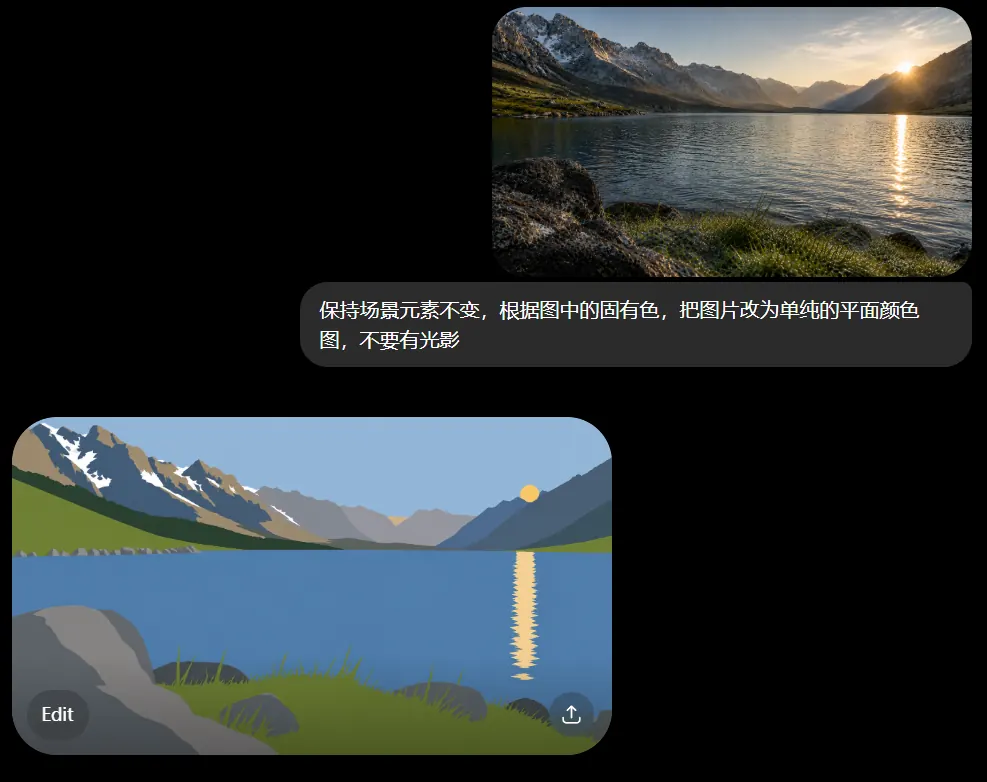
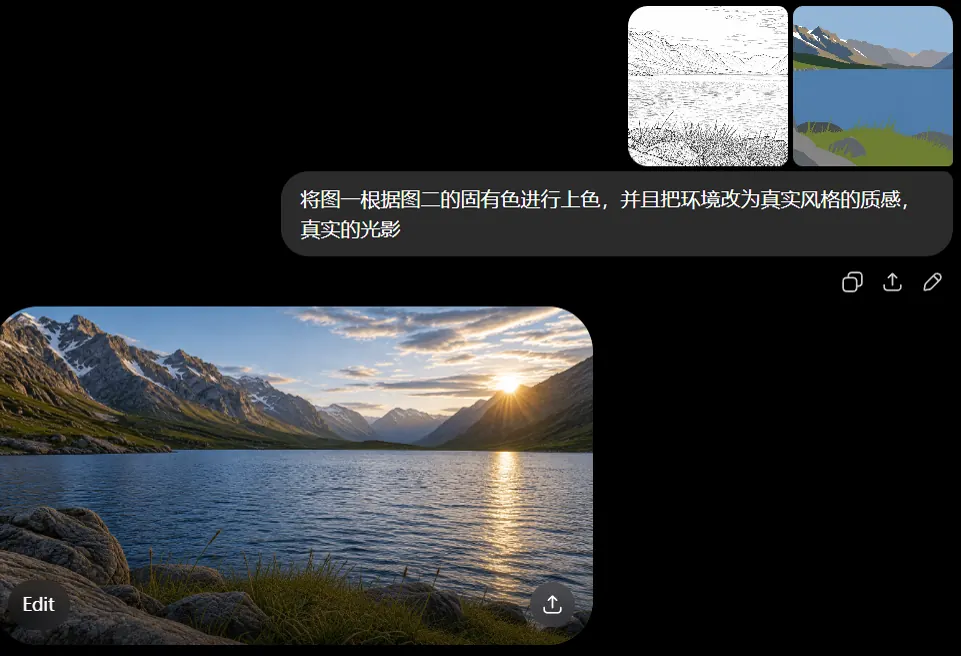
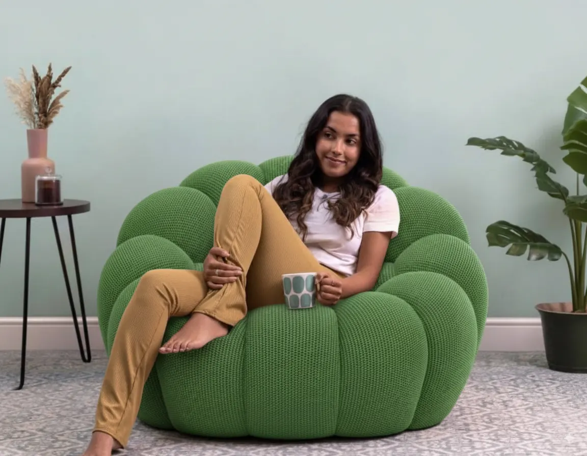
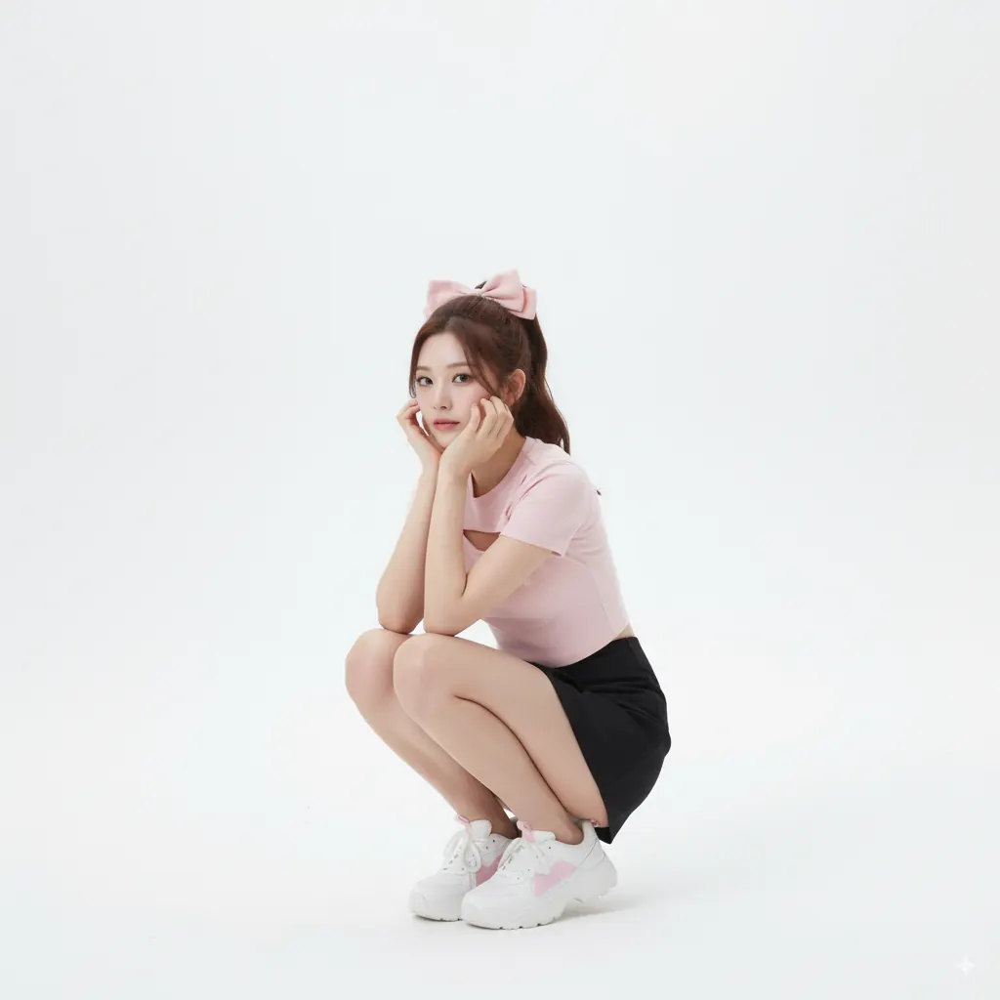
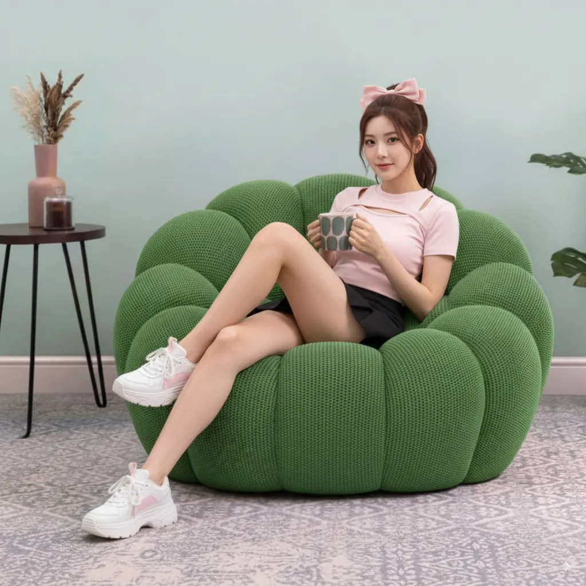
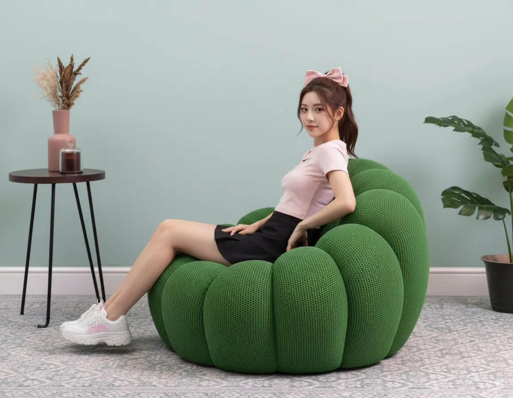
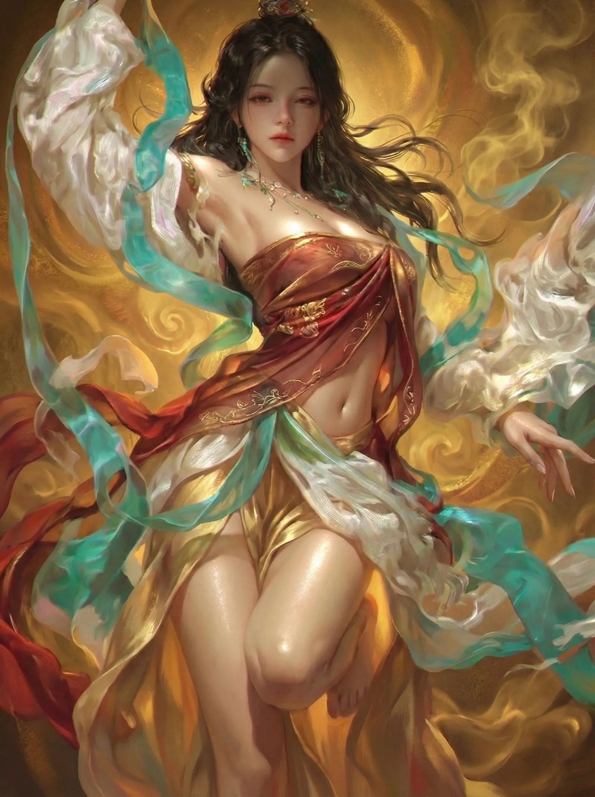
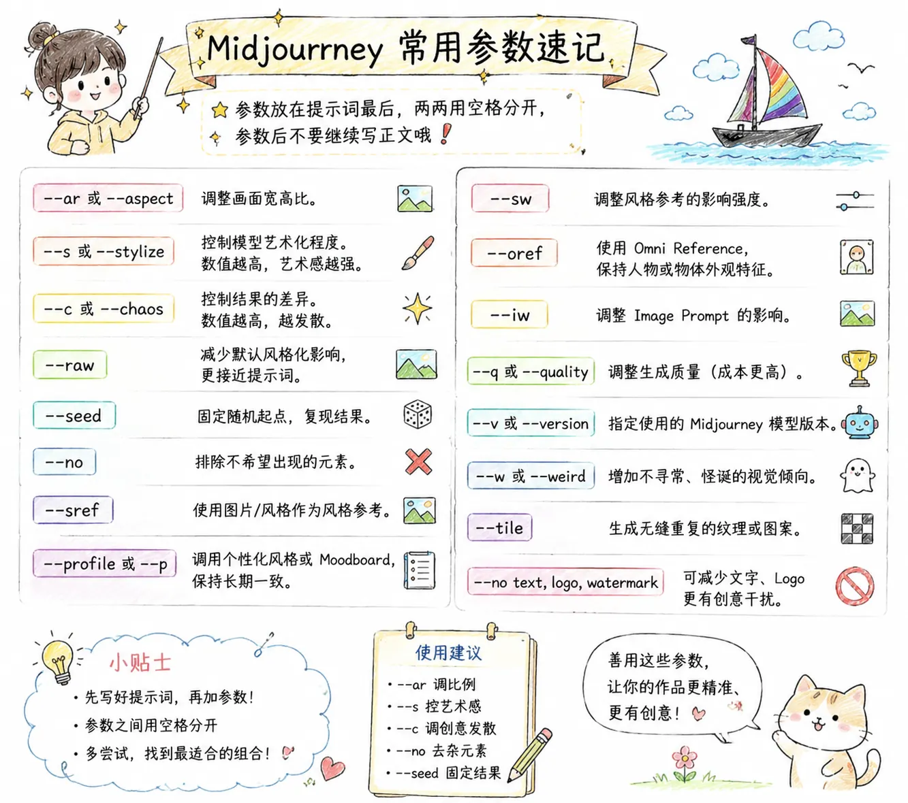

创作实验室/首页
⌕

49内容页365项素材
从入门到进阶工具 · 视觉 · 镜头 · 资源SCROLL TO EXPLORE ↓
01 / VISUAL INPUT用案例理解结果










02 / WHY THIS LAB把复杂创作拆成可执行动作
不只学习工具，
更要学会做出判断。
好的 AIGC 作品来自目标、视觉语言、工具分工和迭代方法的共同作用。这里把图片、视频、提示词、分镜、角色、场景和风格放进一条连续路径。
你可以从一个具体目标开始，先看懂，再复制，最后把方法变成自己的创作习惯。
查看完整学习路径 ↗03 / LEARNING PATH从 START 到 ADVANCED
你的创作路径
08 个模块，按学习难度自然递进。
00START
新手起步
先建立创作地图，理解从目标到结果的基本路径。
建立基础打开 →
01TOOLS
AI工具全景与玩法
认识图片、视频和辅助工具，学会按目标做选择。
工具判断打开 →
02VISION
视觉基础与图片生成
从主体、空间、构图、色彩和光影理解画面。
视觉基础打开 →
03MOTION
AI视频与导演思维
把静态画面推进成动作、镜头和连续片段。
镜头表达打开 →
04PROMPT
提示词库
用结构化表达，把想法变成可以复制的指令。
表达复用打开 →
05METHOD
AIGC影像创作方法论
建立从 brief、生成、迭代到交付的工作闭环。
稳定工作流打开 →
06STYLE
视觉风格与画面语言
找到可持续的视觉方向，提升系列作品的一致性。
风格建立打开 →
07CASES
创作资源
进入完整内容，继续查看案例、图片、视频和 ZIP 资源。
继续深入进入 →
04 / WORKFLOW每次创作都能复用
从想法到成片
把一次灵感拆成四个阶段，减少盲目试错。
01
理解目标
明确受众、画幅、交付形式和最不能出错的内容。
02
建立视觉
拆解主体、空间、构图、色彩、材质、光影与动作。
03
生成与迭代
选择工具，一次只调整一个变量，保留每轮结果。
04
验收与沉淀
用检查点复盘，把有效提示词、案例和资产留下来。
05 / SELECTED CASES从真实案例中学习
创作案例
拆解人物、视频、打斗与视觉设计的实际过程。
49内容页
334图片
14视频
17ZIP 资源